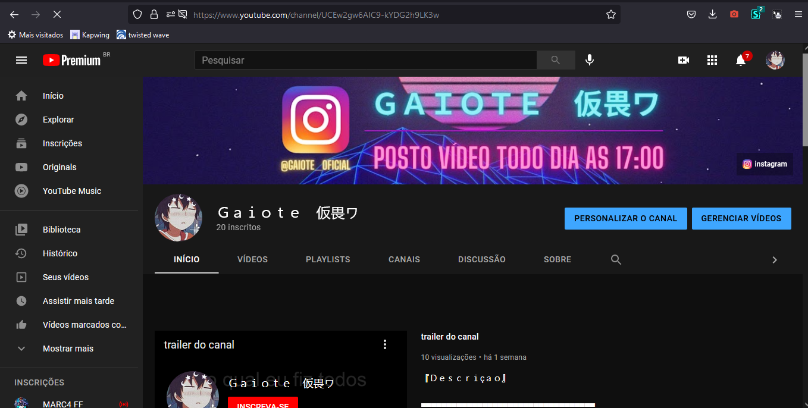

foto do canal do youtube e o meu github

Um garoto de 11 anos que decidiu virar programador por conta do tédio da quarentena
e começa a enxergar que na progrmação um rumo no qual quer seguir
e então ele vai tomar o seu rumo
no youtube eu edito músicas para serem "sloweds+reverbs"
faço todas as edições de aúdio no twisted wave
e a parte visual feita no Kapwing
como programador me considero pleno, não sou nem iniciante e nem senior
mas faço alguns projetos no github, e eles estão públicos para você ver
vem falar comigo